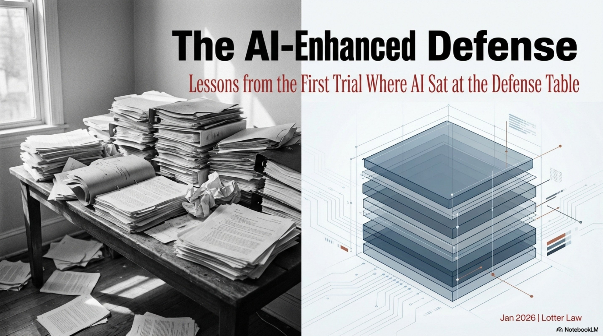

The First Trial Where AI Sat at the Defense Table: What I Learned About Using Technology in DUI Cases

My last DUI trial was different. For the first time, I used artificial intelligence in my trial preparation and during the trial itself. Not to replace my judgment—but to enhance it. AI didn't win the case. I did. But AI made me sharper, faster, and more prepared than I've ever been.
What AI Is Actually Good At (And What It's Not)
The debate about AI in legal practice misses the point. The question isn't whether AI will replace lawyers—it won't. The question is: what is AI better at than humans? And once we know that, how do we use those strengths?
The Honest Assessment
AI is objectively better than humans at pattern recognition, data organization, cross-referencing hundreds of cases, and identifying inconsistencies in documents. Humans are objectively better at judgment, courtroom presence, reading a jury, and the strategic flexibility required in a live trial.
You wouldn't ask a human to manually compare 10,000 breath test results to find anomalies—that's what our Intoxilyzer database does in cases where breath test results exist. And you wouldn't ask AI to make a tactical decision in the middle of voir dire when a juror's body language shifts. That's what a trial lawyer does.
How I Used AI in My Last DUI Trial
I won't go into specifics about the case—client confidentiality matters—but I can tell you it was a breath test refusal case. No Intoxilyzer results to challenge. The entire case came down to the officer's observations, the stop itself, and whether the State could prove impairment without scientific evidence.
This was my first trial using AI as a trial preparation tool. The result? Not Guilty.
Here's where AI made a measurable difference:
Pre-Trial Preparation
- Motion Drafting: AI helped me formulate my pre-trial motions in limine and motion to suppress—organizing legal arguments, finding supporting case law, and structuring the motions more efficiently
- Weakpoint Analysis: AI identified potential weaknesses in my case theory before the State did, allowing me to address them proactively in my trial strategy
- Case Law Research: Instead of reading 50 cases linearly, AI identified the 3 that actually mattered for my specific suppression issues
- Document Analysis: AI cross-referenced the officer's arrest report, deposition testimony, and incident narrative—flagging inconsistencies I could use for impeachment
- Dozens of Small Tasks: From exhibit organization to timeline creation to tracking discovery deadlines—AI handled the repetitive work so I could focus on strategy
During Trial
- Real-Time Cross-Reference: When the officer testified about the 20-minute observation period, I had instant access to the body cam timestamp log showing gaps
- Exhibit Management: AI organized every exhibit, every transcript citation, every impeachment opportunity by topic—not chronologically
- Pattern Recognition: The officer's testimony included 6 variations of the same fact. AI helped me track which version appeared where, so I could impeach effectively
What AI Can't Do in a DUI Trial
AI is a tool. It doesn't make strategic decisions. Here's what I still had to do—what only a human trial lawyer can do:
Human Judgment Required
- Reading the Jury: When a juror's face changes during testimony, you adjust. AI doesn't see that.
- Making Tactical Calls: Do you cross-examine this witness or let their bad testimony stand? AI can't weigh that risk.
- Building Credibility: Juries don't trust data—they trust people. AI can't establish rapport with your client or the jury.
- Strategic Flexibility: When the State changes its theory mid-trial (and they do), AI doesn't pivot. You do.
- Ethical Judgment: AI doesn't know when to object, when to stipulate, or when a question crosses the line.
The Practical Reality: AI as a Force Multiplier
Think of AI like this: a calculator doesn't replace a mathematician. It just means the mathematician can solve harder problems faster. AI doesn't replace trial lawyers—it means we can prepare better cases, find stronger defenses, and spend more time on the work that only humans can do.
In my last trial, AI saved me roughly 20 hours of manual document review and legal research. That's 20 hours I spent refining my cross-examination strategy, preparing my client for testimony, and thinking through how to present our theory of defense in opening statement. The result speaks for itself: Not Guilty.
The Bottom Line
AI didn't win the trial. But it made me a better-prepared advocate. And in a DUI case where the difference between conviction and acquittal can come down to one well-timed impeachment—being better prepared matters.
What This Means for Your DUI Case
If you're facing a DUI charge in Orlando, you want a lawyer who uses every available tool to build your defense. That includes:
- Access to statewide breath test machine data to challenge the reliability of your result (in cases where you took a breath test)
- A proprietary database of FDLE breath test records allowing pattern analysis across thousands of tests—identifying machine-specific defects and systemic problems
- AI-assisted motion drafting and legal research to find the strongest arguments for your case
- AI analysis of police reports, witness statements, and officer testimony to identify inconsistencies and weaknesses—especially critical in refusal cases where the entire case depends on officer observations
- Cross-referencing officer certifications, training records, and agency policies to identify procedural violations
- Experience using these tools in actual trials—not just theoretically—with proven results
But here's what matters more: you want a lawyer who knows when not to rely on technology. When to trust their instincts. When to make the human judgment call that no algorithm can make.
Where This Technology Is Heading
What I used in this trial was just the beginning. The projects I'm working on now will take AI-assisted defense to the next level:
- Automated Video Timeline Synchronization: AI that can sync body cam, dash cam, and CAD dispatch logs to create second-by-second timelines—instantly identifying gaps in officer testimony
- Pattern Recognition Across Cases: Using machine learning to identify which judges grant which motions, which officers have credibility issues, and which defenses work in which courtrooms
- Real-Time Trial Support: AI that can pull up relevant case law, prior testimony, or exhibit references during live cross-examination
But here's the key: AI is a tool, not a replacement. The question isn't whether your lawyer uses technology—it's whether they use it correctly. As a tool to make them sharper, not as a crutch to replace critical thinking.
At Lotter Law, we combine cutting-edge technology with old-school trial advocacy. AI helps us prepare faster and find defenses other lawyers miss. But when we walk into that courtroom, it's still human judgment, human credibility, and human advocacy that wins cases.
Facing a DUI Charge in Orlando?
You need a lawyer who knows how to use technology to build your defense—and who has the courtroom experience to actually win your case. At Lotter Law, we use AI-assisted case analysis, statewide breath test databases, and aggressive trial strategy to fight DUI charges in Orange County and throughout Central Florida.
Call 407-500-7000 for a free case evaluation. Let's talk about your defense—and how we can use every tool available to protect your rights.

Jeff Lotter
Criminal Defense Attorney | Former State Trooper
Jeff Lotter is an Orlando criminal defense attorney and former Florida Highway Patrol trooper. He uses his law enforcement background to build stronger defenses for clients facing criminal charges.